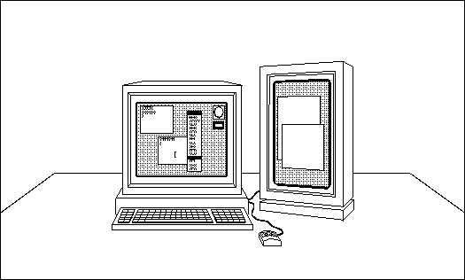
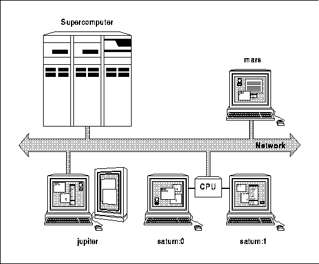

Xlib Programming Manual (O'Reilly & Associates, Inc.) |
In September 1987, the Massachusetts Institute of Technology released the first snapshot of what may well become one of the most significant software technologies of the 1990s: Version 11 of the X Window System, commonly referred to as X11. X11 may not change the world, but it is likely to change the world of workstations.
The X Window System is being adopted as a standard by nearly every workstation manufacturer and should eventually replace or be supported under their proprietary windowing systems. Versions will also be available for personal computers and supercomputers.
For the first time, portable applications can be written for an entire class of machines rather than for a single manufacturer's equipment. Programmers can write in a single graphics language and expect their applications to work without significant modifications on dozens of different computers.
What's more, since X is a network-based windowing system, applications can run in a network of systems from different vendors. Programs can be run on a remote computer, and the results displayed on a local workstation. Proprietary networks have been around for a while. However, network cooperation of different computers has been held up by the lack of a common applications language. Now there is one.
Vendors hope that X will lead to a software explosion
similar to the one that occurred in response to the PC standard on microcomputers.
There have been numerous research versions of X. Version 10, Release 4 (popularly known as X10.4), which was released in 1986, became the basis for several commercial products. Development of most X10.4 products was curtailed, however, when it became apparent that Version 11 would not be compatible with it. Version 11, Release 1 became available in September 1987, Release 2 in March 1988, Release 3 in February 1989, Release 4 in January 1990, and Release 5 in August 1991.
Version 11 is a complete window programming package. It offers much more flexibility in the areas of supported display features, window manager styles, and support for multiple screens and provides better performance than X Version 10. It is fully extensible. But just as important, the X11 subroutine library (Xlib) is expected to be stable for several years and to be at least a de facto industry standard. That means that programs written with this library will not need major revisions because of software updates. While there may be additions to this library, there will not be incompatible changes to it.
With X11 Release 2, control of X passed from MIT to the
X Consortium, an association of major computer manufacturers who plan to
support the X standard. The Consortium was formed in January 1988 and includes
virtually all large computer manufacturers. Many software houses and universities
are associate members, who also have a voice in controlling the standard
and receive advance access to newly released software.
A slightly unusual feature is that a display is defined as a workstation consisting of a keyboard, a pointing device such as a mouse, and one or more screens. Multiple screens can work together, with mouse movement allowed to cross physical screen boundaries. As long as multiple screens are controlled by a single user with a single keyboard and pointing device, they comprise only a single display, as shown in Figure 1-1.
A display consisting of more than one screen

At this point, only TCP/IP and DECnet networks are supported by the X Consortium and most vendors, though that may change before long.
The program that controls each display is known as a server. At first, this usage of the term server may seem a little odd--when you sit at a workstation, you tend to think of a server as something across the network (such as a file or print server) rather than the local program that controls your own display. The thing to remember is that your display is accessible to other systems across the network, and for those systems, the code executing in your system does act as a true display server.
The server acts as an intermediary between user programs (called clients or applications) running on either the local or remote systems and the resources of the local system. The server (without extensions) performs the following tasks:
Applications can run on any system across the network

In practice, each user is sitting at a server and can start applications locally to display on the local server or can start applications on remote hosts for display on the local server, if the remote hosts have permission to connect to the local server. All other users in the network are in a similar situation--they can run applications on their own system or on yours, but they will, for the most part, be displaying on their own server. This use of the network is known as distributed processing. Distributed processing helps solve the problem of unbalanced system loads. When one host machine is overloaded, the users of that machine can arrange for some of their programs to run on other hosts.
One extreme of this arrangement is the PC server or X terminal. Because these single-task systems can run only the X server (and sometimes a window manager), a user sitting at one of these servers must run all clients on systems across the network, with their results displayed on the PC or X terminal screen. This makes the single-tasking PC or X terminal look and work just like X on a multitasking workstation.
The window manager is just another program written with Xlib, except that it is given special authority to control the layout of windows on the screen. The window manager typically allows the user to move or resize windows, start new applications, and control the stacking of windows on the screen, but only according to the window manager's window layout policy. A window layout policy is a set of rules that specify allowable sizes and positions of windows and icons.
Unlike citizens, the window manager has rights but not responsibilities. Programs must be prepared to cooperate with any type of window manager or with none at all (there are fairly simple ways to prepare programs for these contingencies). The simple window manager twm does not enforce any window layout policy, but clients should still assume that there could be one. For example, the window manager must be informed of the desired size of a new window before the window is displayed on the screen. If the window manager does not accept the desired window size and position, the program must be prepared to accept a different size or position or be able to display a message such as "Too small!"
If you are having trouble visualizing this situation, imagine a window manager where no windows are allowed to overlap. This is known as a tiled window manager. The Siemens RTL tiled window manager lets only transient windows (such as pop-up menus) overlap. The twm window manager, on the other hand, is referred to as real-estate-driven because keyboard input is automatically assigned to whatever window the pointer currently happens to be in.
There is at least one other window manager variety that you will encounter, called a listener or click-to-type. Its distinguishing feature is that it assigns all keyboard input to a single window when that window is selected by clicking on it with the pointer. A listener may or may not allow windows to overlap. Apple MacintoshÔ users will recognize this type of interface.
X is somewhat unusual in that it does not mandate a particular type of window manager. Its developers have tried to make X itself as free of window management or user interface policy as possible. And, while the X11 distribution includes twm as a sample window manager, individual manufacturers are expected to write their own window managers and user interface guidelines. In fact, two commercial window managers with user interface guidelines are already becoming established. They are olwm, the OPEN LOOKÔ window manager from AT&T and Sun, and mwm, the MotifÔ window manager from Open Software Foundation. The OSF Motif window manager mwm, and OPEN LOOK window manager olwm both can be configured to be real-estate-driven or click-to-type.
In the long run, the developers of X may well have made the right choice, in that the lack of clear user interface guidelines will allow a period of experimentation in which the marketplace could come up with better designs than are presently available. Some industry observers, however, decry this move, pointing out that it undercuts X's appeal as a standard user platform--X programs may be portable across systems from multiple vendors, but if users have to deal with a different user interface on each system, half the benefit of that portability will be lost. Until a clear user interface standard emerges from the marketplace, developers must be careful to write their programs in such a way that they can run under different window managers and user interface conventions.
The need to handle events is a major difference between programming under a window system and traditional UNIX or PC programming. X programs do not use the standard C functions for getting characters, and they do not poll for input. Instead there are functions for receiving events, and then the program must branch according to the type of event and perform the appropriate response. But unlike traditional programs, an X program must be ready for any kind of event at any time. In traditional programs the program is in control, asking for certain types of input at certain times. In X programs, the user is in control most of the time.
Extensions have both client-side and server-side code.
A server vendor is not required to provide support for all the standard
extensions. Therefore, before using an extension, you must query the server
to see if the extension is supported. At this writing, only the Shape extension
is widely supported.
Clients communicate with the server via Xlib calls

A display server is a program that runs on each system that supports a graphics display, keyboard, and mouse. The X release from MIT includes sample monochrome and color servers for Sun, DEC, Hewlett Packard, IBM, Apple Macintosh, and many other systems. Commercially developed servers are available for virtually all major workstation vendors. In addition, companies such as Graphics Software Systems, Interactive Systems, and Locus Computing offer server implementations for IBM-compatible PCs. Finally, there are X terminals, which are screens controlled by an X server running in ROM. X terminals are available from companies such as Visual, Network Computing Devices, and GraphOn.
Applications communicate with the server by means of calls to a low-level library of C language routines known as Xlib. Xlib provides functions for connecting to a particular display server, creating windows, drawing graphics, responding to events, and so on. Xlib calls are translated to protocol requests sent via tcp/ip either to the local server or to another server across the network. Some of the many sample applications available on the X release include xterm (a terminal emulator), xcalc (a calculator), xmh (a mail handler), xclock (a clock), and a troff previewer.
The window manager is just another program written with the X library, except that by convention it is given special authority to control the layout of windows on the screen.
Client is a slightly more general term than application, although they are almost synonymous. All clients except the window manager are called applications. When a statement in this manual applies only to the window manager or only to the applications managed by the window manager, the appropriate term is used. In other instances, whichever term seems more natural is used.
Applications and window managers can be written solely with Xlib or with a set of higher-level subroutine libraries known as toolkits. Toolkits implement a set of user interface features such as menus or command buttons (referred to generically as toolkit widgets) and allow applications to manipulate these features using object-oriented programming techniques. Toolkit intrinsics allow programmers to create new widgets.
There are several toolkits distributed with the X11 release, the most notable of them being the Xt Toolkit, which was developed by Digital and MIT, and the Interviews toolkit, which was developed by Stanford University. Xt is now officially part of the X11 standard.
Toolkits can make programming much, much easier and the finished project more thorough. Toolkits have built-in user configurability and built-in code for interaction with the window manager, which will save you a lot of trouble. You are advised to use a toolkit for most of your X programming. However, all existing toolkits in C also require or allow you to use Xlib code. And, more than that, they use Xlib internally; so understanding Xlib will help you understand how the toolkits work.
Another reason to use a toolkit is to take advantage of established user interface conventions. Several of these are available, such as OSF's Motif and Sun's OPEN LOOK. If you use Xlib for all your X programming, either you will have to reimplement one of the established conventions such as OPEN LOOK or your program will be an oddball that will not look or respond as people expect.
There are tradeoffs in using toolkits, however. One is that the executable for a given program using a toolkit is considerably larger than the equivalent program written using Xlib. Another is that the toolkits utilize highly abstract concepts and require strict programming conventions because of their object-oriented design. These take time to learn.
This manual describes how to write programs with Xlib.
Other volumes in our X Window System series cover the toolkits.
| Function Group | Description | Chapter |
|---|---|---|
| Color | Routines to change the way colors drawn by an application are interpreted on the screen. | Chapter 7 |
| Cursors | Routines to change the shape and colors of the image that tracks the pointer around the screen. | Chapter 6 |
| Data Management | Several mechanisms to associate data with windows or numbers. | Chapter 15 |
| Display Connection | Routines to connect and disconnect an application with a display, possibly across the network. | Chapter 3 |
| Display and Server Specifications | Macros and equivalent functions are provided that provide information about a particular server implementation and the connected display hardware. | Volume One, throughout;Volume Two, Appendix C |
| Drawing | Routines to draw dots, lines, rectangles, polygons, and arcs, and an analogous set to fill the last three. | Chapter 6 |
| Errors | Routines to set the functions called when errors occur. | Chapter 2 |
| Events | Routines to get input from the user, from other applications, and from the server. In X, these are collectively called events. | Chapter 8 |
| Extensions | Routines to find out what extensions are available on a particular server and get information about how to use one. | Chapter 15 |
| Fonts | Routines to list available fonts, load fonts, and find out their characteristics. | Chapter 6 |
| Geometry | Routines to manipulate and translate geometry specifications. | Chapter 13 |
| Graphics Context | Routines to set the way drawing requests are interpreted. | Chapter 5 |
| Host Access | Routines to control access to a server from other machines connected in a network. | Chapter 15 |
| Images | Routines to get, display, or manipulate screen images. | Chapter 6 |
| Interclient Communication | Routines enabling any client to make available information for any other client to read. | Chapter 12 |
| Internationalization | Functions to handle user input and draw text independent of language. | Chapters 6, 10, and 11 |
| Keyboard | Functions to modify the way keyboard input is handled, including the keyboard mapping. | Chapter 9 |
| Pointer | Functions to modify the way pointer input is handled. | Chapter 9 |
| Regions | Routines to perform mathematical operations on polygonal regions. | Chapter 6 |
| Resource Management | Routines to make managing user preferences and command line arguments easier. | Chapter 13, Chapter 14 |
| Screen Saver | Routines to set the operating characteristics of the daemon that blanks the screen when the keyboard and pointer have been idle for a time. | Chapter 15 |
| Text | Routines for drawing text and for determining the size of a string to be drawn. | Chapter 6 |
| User Preferences | Routines for setting and getting the keyboard click and auto-repeat settings. | Chapter 9 |
| Window Attributes | Routines for setting and getting the current characteristics of a window. | Chapter 4 |
| Window Life | Routines to create or destroy a window. | Chapter 3 |
| Window Management | Routines to allow the manipulation of windows around the screen, changing their size, their visibility on the screen, and their apparent position above or below other windows. | Chapter 16 |
Xlib Programming Manual (O'Reilly & Associates, Inc.) |